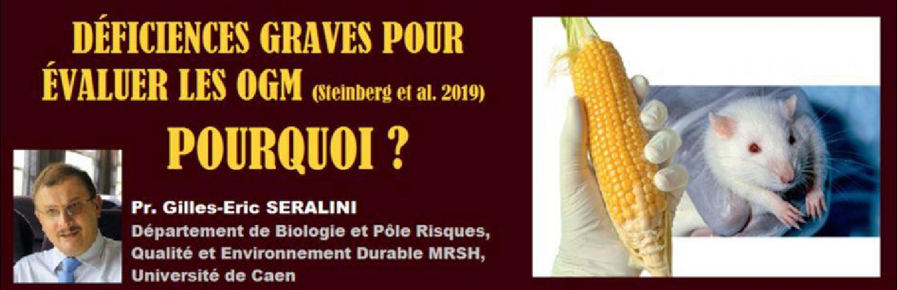
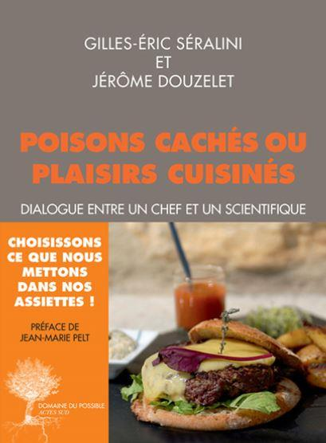
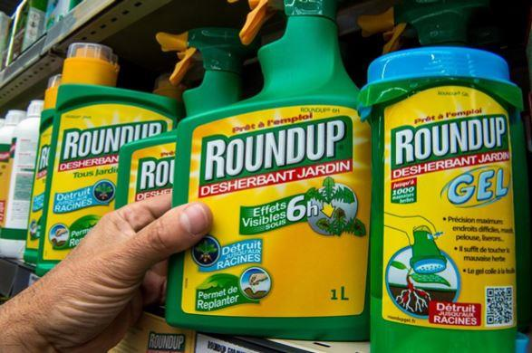
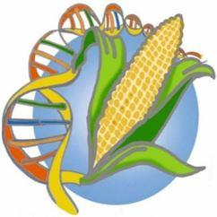
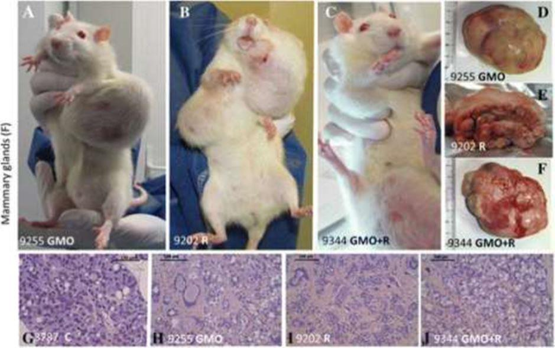
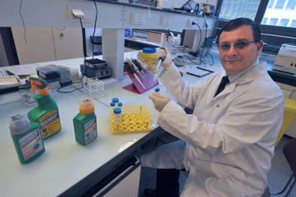

Déficiences graves pour évaluer les OGM (Steinberg et al. 2019). Pourquoi ?
par Gilles-Éric SERALINI

Le 12 février 2019, Pablo Steinberg et ses collaborateurs publient sur l’absence d’effets nocifs du maïs OGM NK603 de Monsanto sur des rats Wistar (Arch. Tox.). Une certaine presse orientée se précipite pour affirmer que nos études prouvant leur toxicité étaient donc fausses. L’enjeu de l’évaluation des OGM et des pesticides est mondial et crucial pour leurs autorisations à travers la planète. Ils représentent respectivement les brevets sur la base des plantes alimentaires et la facilitation de leurs cultures intensives. Les pesticides synthétiques sont aussi des produits de la pétrochimie. Pour en savoir plus voir « Poisons cachés ou plaisirs cuisinés », livre de l’auteur avec Jérôme Douzelet (Actes Sud).
DÉCRYPTAGE
Presque sept années après notre recherche sur le Roundup et le même maïs OGM, que nous avons montrés toxiques, on peut se féliciter de l’intention d’une étude détaillée reprenant une moitié de nos travaux, cités dès les premiers mots du résumé. Nous sommes en présence d’une souche de rat différente, considérée moins sensible, soit, et d’un plus grand nombre d’animaux. Saluons l’initiative qui a bénéficié de bien plus de fonds que notre étude pionnière.
SUR L’INSUFFISANCE DU PROTOCOLE PAR RAPPORT À NOS RECHERCHES
Mais il s’agit d’une reprise d’une moitié seulement de nos recherches, malheureusement, car l’étude de la toxicité à long terme du Roundup que nous avions réalisée n’a pas été envisagée dans ce travail (discussion, 1° colonne, 1° paragraphe de Steinberg et al.). Ce maïs OGM avait pourtant été génétiquement modifié uniquement pour pouvoir tolérer le Roundup, c’est-à-dire en absorber sans mourir.
Rappelons que le Roundup est le principal pesticide du monde, dont un des résidus le glyphosate est trouvé dans toutes les urines où on le recherche. Nous y avons trouvé des « poisons cachés » dérivés de pétrole oxydés et de l’arsenic dans sa composition classée confidentielle.
Étudier cela, alors que leur recherche a été imaginée et financée par des fonds publics pour vérifier la nôtre, autour de laquelle Monsanto avait monté une polémique dont la source a été révélée grâce aux Monsanto Papers, aurait été particulièrement important. Toute la population du monde est donc contaminée aujourd’hui par des résidus de ce type de produit, dont certains sont nommés glyphosate et AMPA. En effet, le Roundup est beaucoup plus toxique (1000 fois environ) que le glyphosate, mais confondu avec ce dernier, car il est le seul principe « actif » déclaré par la Société Monsanto.
Nous avions démontré et avons confirmé récemment par des méthodes très spécifiques dites « omiques » la toxicité de ce Roundup (après deux années de consommation dans l’eau de boisson à 0,1 ppb) sur les reins, le foie. Des tumeurs mammaires et dérèglements des hormones sexuelles sont liées à la consommation de ce pesticide.
Tout ce qui va suivre est typique d’une désinformation organisée pour sous-estimer les risques à long terme des pollutions technologiques, aux lourdes externalités sur la santé et l’environnement.
SUR LES ERREURS GRAVES DU PROTOCOLE DE STEINBERG PAR RAPPORT À NOS RECHERCHES
Pour ce qui concerne le maïs OGM, il y avait bien dans l’étude Steinberg un groupe témoin, un groupe avec OGM non traité au Roundup, et un groupe avec OGM aspergé de Roundup, mais les croquettes issues de ces plantes se retrouvent toutes contaminées avec 30-140 ppb (soit microgr/kg, donc 300 à 1400 fois plus que ce que nous avions montré comme toxique) de ce pesticide, y compris ainsi chez les témoins ! (discussion, 1° colonne, 2° paragraphe). Cela accroit le bruit de fond gravement des maladies chez les témoins, empêchant de constater tout effet spécifique du traitement par les OGM chez les autres animaux.
On aurait pu arrêter là avec ces régimes que nous aurions jetés à l’incinérateur après une telle négligence de contamination, probablement avec une autre plante transgénique tolérante au Roundup comme le soja ou le colza. Mais les auteurs n’en font rien du tout. Ils considèrent que le glyphosate mesuré « n’a pas d’effet nocif » (discussion, 1° colonne, 2° paragraphe) puisque « Il ne montre aucun potentiel génotoxique ou cancérogène chez les souris et les rats » selon l’EFSA, agence européenne dont des compromissions dans ce dossier ont été prouvées et ont conduit à des démissions, arrêtant leur citation en 2015, alors que toute la presse parle du débat récent à ce sujet. Ceci est une lacune grave et impardonnable au niveau scientifique, un biais méthodologique et d’interprétation majeur.
Ils confondent aussi dans les termes glyphosate et Roundup, alors que nous avons identifié et publié de 2013 à 2018 la présence des dérivés de pétrole toxiques et de métaux lourds dont l’arsenic, aux côtés de glyphosate, et dans le Roundup comme nous l’avons souligné ci-dessus. D’ailleurs, les nourritures pour rats de cette expérience contiennent de 70 à 290 ppb d’arsenic en poids frais, une toxicité chronique pour tous les groupes masquant les effets possibles de l’OGM étudié ne peut donc être exclue.

UNE SECONDE ERREUR GRAVE PAR RAPPORT À NOS RECHERCHES
Les régimes des témoins de Steinberg sont contaminés comme ceux des traités avec de nombreux autres polluants (résultats, fin 1° colonne) : des dioxines et furanes, PCB, PAH, mycotoxines et nitrosamines en quantités « faibles et similaires ». Tous les régimes contiennent aussi des pesticides : 2-phenylphenol, cypermethrin, deltamethrin, tetramethrin, ethoxyquin, piperonyl butoxide, pirimiphosmethyl, N-desethyl-primiphos-methyl et propiconazole, glyphosate, AMPA. Comme ils sont supposés être en dessous des limites réglementaires (dont nous avons montré maintes fois l’insuffisance), « ils ne pourraient pas affecter la santé des rats de quelque manière que ce soit » selon les auteurs. Le ridicule ne tue pas cette « science »…
Cette contamination et ce raisonnement ne sont pas acceptables. Afin d’éviter de tels problèmes, nous avions nourris les témoins de notre étude avec des plantes spécialement poussées sans pesticides, avec des méthodes d’agriculture biologique, ce qui est normal si l’on veut étudier dans le groupe traité l’effet d’un pesticide ou d’un OGM qui en contient.
D’autant que, en 2015, nous avons publié dans PlosOne la contamination maximale et délétère des croquettes de l’industrie par ces polluants et d’autres, et des pesticides, concluant que l’industrie ne pouvait pas déduire, en présence de tels régimes, que les rats développaient des « tumeurs naturelles » ! Nous avions 5 à 8 fois moins de tumeurs et maladies dans nos rats témoins, pouvant donc mettre en évidence un différentiel lié à l’OGM d’une part, et au Roundup d’autre part.
UNE TROISIÈME ERREUR IMPARDONNABLE
La contamination des nourritures des témoins de Steinberg ne s’arrête pas là. Ils contiennent du maïs OGM NK603 ! Même en traces « non quantifiables » pour Steinberg et col. (Résultats, 2° colonne, 2° paragraphe), lesquelles sont censées « ne pas influencer l’expérience de quelque manière ». Pourquoi ?
Cela souligne combien cette nourriture a été faite sans exigence ni vérification a priori, et tout cela biaise l’expérience.
D’autant que d’autres OGM contaminent les lots de croquettes, notamment puisqu’ils sont vecteurs de glyphosate, comme nous l’avons expliqué, et bien d’autres types d’OGM encore comme ils l’admettent dans leurs données brutes. Comment ne pas se retrouver avec une expérience faussée ?

LES RÉSULTATS ? DES BIAIS MAJEURS
En fait, des quantités de rats de cette expérience ont des tumeurs et des cancers dans de nombreux organes après deux années. Elles seraient spontanées selon les auteurs, mais la contamination de leurs lots de nourriture peut tout aussi bien sinon mieux les expliquer, pour nous.
Aucune recherche n’est faite sur la chronologie d’apparition des tumeurs ni leur taille par rapport aux témoins, contrairement à ce que nous avions réalisé. La chronologie de la mortalité n’est pas étudiée. Ils étudient deux doses différentes de l’OGM, nous en avions trois.
Les auteurs considèrent a priori que toutes ces contaminations n’auront pas d’effet. Cette subjectivité leur appartient et on leur demande de prendre toutes leurs responsabilités au regard des risques pour la santé qu’ils sont censés examiner et faire encourir à celles et ceux qui en consommeront directement, ou indirectement par le biais des animaux qu’ils mangeront.
Cependant, les auteurs de cette récente publication trouvent quand même des différences significatives entre autres sur la mortalité des mâles, plus élevée lorsque nourris à l’OGM durant deux années, des néoplasies hypophysaires, et des dérèglements des hormones sexuelle estradiol et thyroïdienne dès 90j de traitement chez les femelles. Nous avions également montré de telles différences il y a sept ans. Pour les auteurs, ce ne peut pas être relié au traitement (le maïs OGM). Pourquoi ?
DES INTERPRÉTATIONS SUBJECTIVES ET PARTIALES
Steinberg et al. développent le même raisonnement que l’EFSA et l’industrie : soit il n’y a pas de répercussion visible sur les coupes histologiques des organes (ce qu’on ne peut pas analyser et qui n’est pas montré), soit il n’y aurait pas d’effet proportionnel à la dose d’OGM, et nous avions expliqué dans des publications scientifiques l’inanité d’une telle assertion : les effets des perturbateurs hormonaux ne peuvent pas être scientifiquement considérés a priori comme proportionnels à la dose.
Afin de tamiser les différences, les auteurs amènent de plus, et tout comme l’industrie dans ses dossiers, un raisonnement assez confus (discussion, 5° et 6° colonnes) pour comparer les effets observés dans cette expérience aux « données historiques des rats » (en général pour cette espèce), à « une variation selon des largeurs de bandes équivalentes », c’est-à-dire en bref à un nombre non précisé de rats d’autres expériences qui auraient consommé des régimes tout aussi contaminés, mais différents. Nous nous étions opposés à de telles mises en perspectives laxistes qui ne peuvent que conduire à sous-estimer des effets toxicologiques potentiels avec une grande subjectivité, voire une partialité non justifiable et à géométrie variable. Toutes les différences doivent être examinées avec minutie et précautions, en favorisant l’étude des risques plutôt que leur négligence, puisqu’il s’agit de la dernière étape de recherche sur le rat avant une consommation en masse par les populations animales et humaines.
De manière surprenante, les auteurs concluent finalement de tout cela qu’il ne faut plus se donner la peine à l’avenir de telles études sur les OGM agricoles en général, ce qui est contraire à tout esprit de recherche, et surtout non étayé par les contaminations et résultats douteux qu’ils obtiennent ! Pourquoi de telles analogies avec le raisonnement de Monsanto, de l’industrie et de l’EFSA, que nous connaissons bien ?
DE GRAVES CONFLITS D’INTÉRÊTS NON DÉCLARÉS À MAINTS NIVEAUX
Pablo Steinberg déclare qu’il n’a pas de conflit d’intérêt dans l’article qu’il publie sur ces résultats et leurs interprétations que nous avons décrites comme très laxistes, conformément aux pratiques de Monsanto que nous avions contre-expertisées et publiées.
Nous notons cependant dans ses descriptions qu’il sous-traite une partie des analyses au Laboratoire Covance à Madison dans le Wisconsin aux USA, dans lequel Monsanto a largement investi et qui a mené des études similaires avec le même OGM et d’autres pour Monsanto, qui avaient été biaisées, ce que nous avions explicité et publié dans le détail dès 2007.
Nous notons que Pablo Steinberg a été expert pour l’ILSI dans sa propre déclaration d’intérêt dans un autre document public pour G-TwYST, l’acronyme de cette expérience. Or l’ILSI (International Life Science Institute) qui fut présidé par Monsanto est un organisme bien connu de lobbying industriel pour éviter trop de règlementation et de tests en particulier sur les OGM et pesticides, et est très favorable à leur usage.
Nous notons que Pablo Steinberg a été dans le Comité du BfR, agence d’évaluation allemande en charge de l’évaluation du glyphosate ; et cette agence a, pour ce faire, recopié des passages entiers écrits par Monsanto, et volontairement incomplets, cela est aujourd’hui connu.
Nous notons que Pablo Steinberg est encore conseiller, et ce depuis 2005, de l’Institut Danone. Le groupe du même nom fait partie de l’ILSI. Dès la parution de notre étude de 2012 qui a motivé le présent travail, mais qui avait trouvé de nombreux risques à l’OGM et au Roundup, il est aujourd’hui prouvé grâce aux Monsanto Papers, et paru dans la presse, que c’est une personne haut placée de ce groupe Danone qui avait coordonné, au tout début de la sortie de notre étude, les contacts entre Monsanto et le gouvernement français pour ne pas faire prendre en compte notre recherche au niveau réglementaire, laquelle aurait logiquement dû provoquer l’interdiction de cet OGM et du Roundup. Danone a des laboratoires de biologie moléculaire pour réaliser des microorganismes modifiés pour yaourts et autres produits. Monsanto a par la suite mené une campagne de diffamation unique et rare dans l’histoire à notre encontre, à travers une « communauté scientifique » dont les membres de l’ILSI font partie. Nous avons réalisé et gagné sept procès en diffamation contre ces lobbys de 2011 à 2017 pour le savoir.
Pour toutes ces raisons, cette publication doit être rétractée. S’agit-il de fraudes intentionnelles ?
Pr. G-E. S.
Les études scientifiques citées sont téléchargeables sur www.seralini.fr
Partager cette page